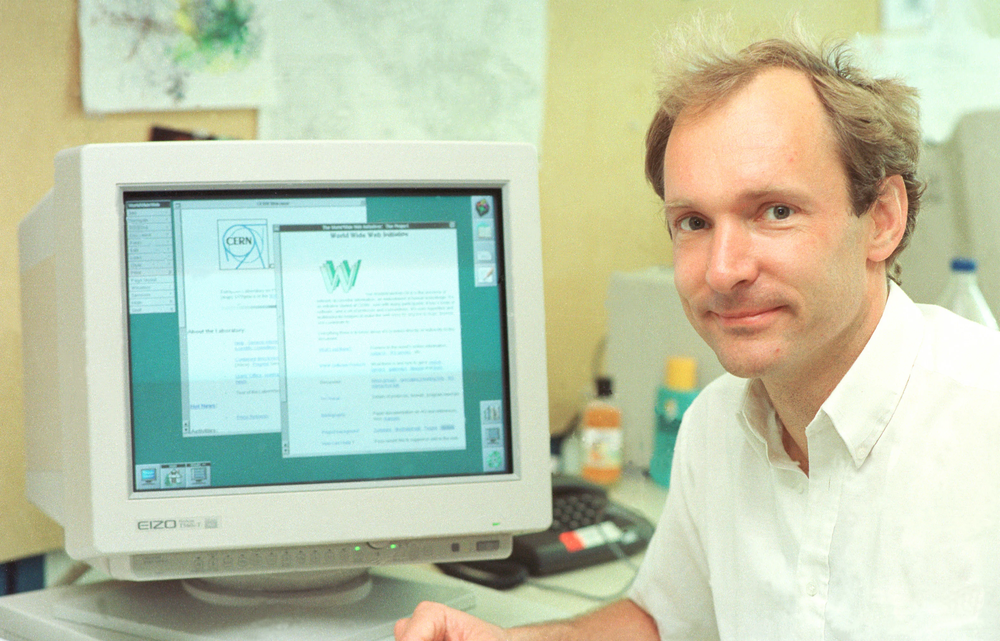
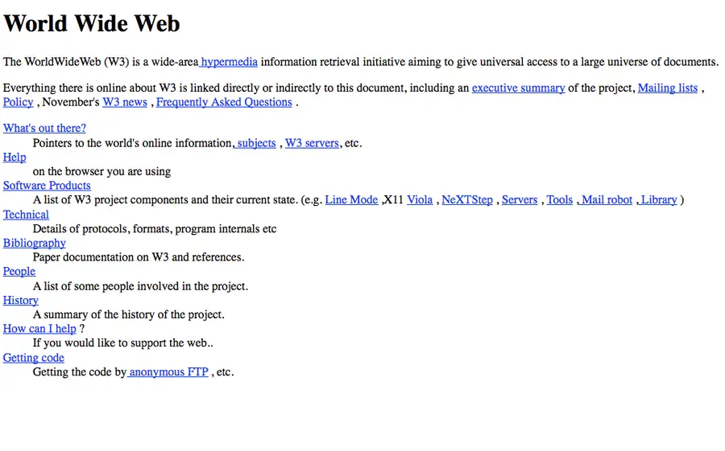
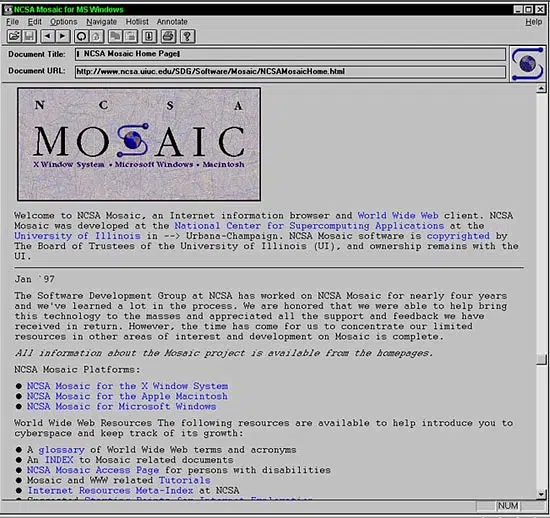
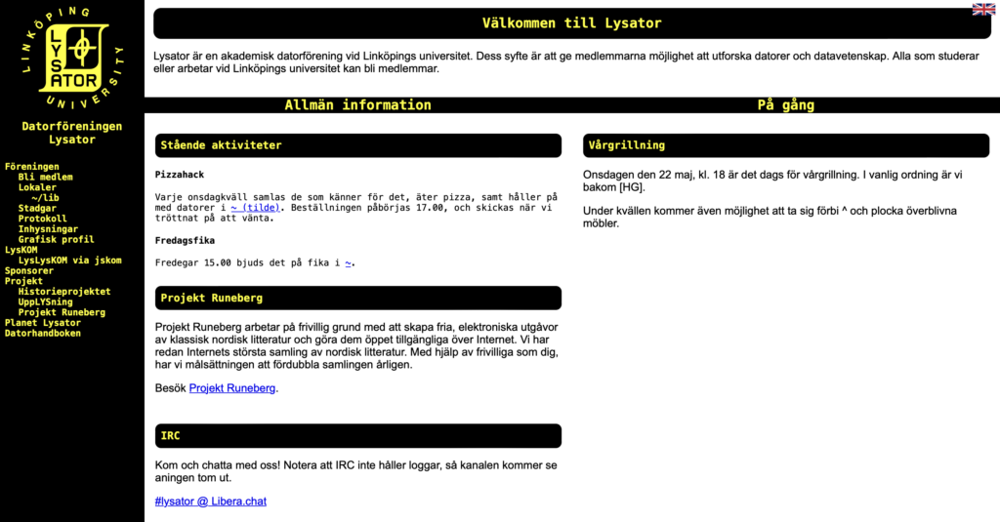

ARPANET är namnet på starten av internet och startade på den amerikanska försvarsmyndigheten ARPA där idén till internet formuleras 1963 och utvecklingen fortsätter under en stor del av 1960-talet. 1969 under september länkas Arpanets första dator med en ny Interface Message Processor (IMP) som senare leder till att forskargruppen ULCA kan skicka ett meddelande till Standford (ca 50 mil bort) den 29 oktober. De lyckades skicka L & O, dock var tanken LOGIN men serven kraschade.
Tim Berners-Lee från Schweiz skapar den första webbplatsen för sitt forskningscentrum i CERN under 1989. Dock så blev webben tillgänglig för alla 6 augusti 1991 genom att posta inlägg om sin skapelse på offentliga nyhetsgrupper. Med detta så hade man nu ett system där man kunde länka och visa innehåll på internet- vilket betyder att allt nu har en egen adress, en URL, som talar om hur man hittar dit och dels ett system för hur webbläsare kan läsa och visa innehåll. WWW gjorde det även möjligt att visa foton, film och ljud. Tim Berners-Lee utvecklar den första webbläsaren, vilket gör det möjligt att surfa runt mellan de sidor som fanns då. Han skapar även den första webbservern, samt HTML. 1993 i april beslutar CERN att släppa rättigheterna till WWW fria som gör att systemet kan spridas över hela världen.

Den första webbsidan var skapad av Tim Berners-Lee och är kort om vad WWW är från forskningscentrumet CERN. Den har flera länkar som koppar till svar om frågor om WWW, historia, vilka som var med och skapade den, vilka verktyg som använder och mer. Den skapades den 6 augusti 1991.

Den första stora webbläsaren blev Mosaic, även om WWW är den vi oftast använder idag, detta är för att WWW stationerade sig på dyra datorer som de flesta personer inte hade råd med. Då kom Mosaic fram samtidigt men som ett mycket billigare förslag. Mosaic-webbläsaren är utvecklad av Eric Bina och Marc Andreessen vid National Center for Supercomputing Applications (NCSA). De hade även ett användarvänligt gränssnitt som gjorde det enkelt för användare att utforska webben och visa webbsidor med grafik och bildstöd som bidrog till att webben blev mer tillgänglig och intressant att använda. Detta gjorde så att den fick miljontals användare världen över.

En IP-adress är för att kunna identifiera olika datorer, varje dator har en egen unik IP-adress som varje telefon har ett telefonnummer. Den gör också så att vi kan skicka och ta emot information från andra datorer, alltså kunna kommunicera. Förut om man ville någonstans eller skicka meddelanden så var man tvungen att skriva ner IP-adressen som är bara en lång sifferkombination med punkter. När allt fler ville ansluta sig och använda webben blev detta system ohållbart så 1983 tog dataveteranen Paul Mockapetris itu med problemet. Han uppfann då DNS (Domain Name System) – domännamnsystemet och då får man bland annat webbservar och e.-postservar lättihågkomliga domännamn som exempelvis youtube.com vilket gjorde det mycket lättare att hitta och komma ihåg webbservrar. När man ska besöka en webbplats skriver man in platsens webbadress och då skickar ens webbläsare en förfrågan till ens internetoperatörs DNS-server och frågar: vilken IP-adress peker det här domännamnet till? Om den vet svaret så skickas rätt IP-adress tillbaka så att datorn vet vart den ska ansluta. Ibland så vet inte internetoperatörens DNS-server om domännamnet och då skickas frågan vidare till en av internets rotservar. Rotservar vet inte alla domännamn heller men vet all toppdomäner som står efter sista punkten exempel .se, .dk, eller .com.
I februari 1993 kommer den första svenska webbserver- Spinner som har en hemsida var den 21-åriga Per Hedbor. Självaste domännamnet är Lysator och blev den sjätte första webbsidan i världen och finns fortfarande kvar idag med en retrokänsla. Lysator handlar om Lysator och föreningens verksamhet, samt lite information om föreningens medlemmar. Den var även hem till projekt Runeberg där man kan hitta klassisk nordisk litteratur digitaliserad och gratis.
